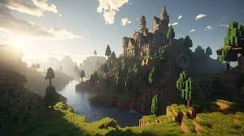
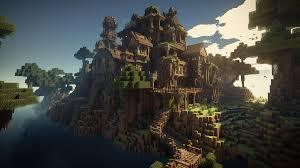
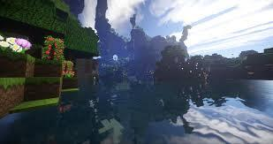

Hogyan Építsünk Fantasztikus Épületeket
  A Minecraftban az építés a kreativitás határtalan kifejezése. Legyen szó akár egyszerű kis házról, akár egy hatalmas kastélyról, a lehetőségek végtelenek. Az építkezés megkezdéséhez fontos, hogy tervezd meg előre, milyen stílusú épületet szeretnél létrehozni. Használj különböző anyagokat és színeket, hogy egyedi megjelenést kölcsönözz az alkotásodnak.
Íme néhány tipp, hogyan teheted a legjobbá az építkezési projektjeidet:
- Alaprajz: Kezdd az alaprajz megtervezésével. Rajzolj le egy vázlatot, és gondold át, hogyan helyezkednek el az egyes helyiségek.
- Anyagválasztás: Válassz ki különböző blokkokat, hogy érdekesebb legyen az épület. Például, használj fát, követ és üveget kombinálva.
- Részletek: Ne felejtsd el a részleteket! A díszítő elemek, mint például lámpák, kertek és bútorok, életet lehelnek az épületekbe.
Kreatív Építési Projektek
Az alábbi projektek nagyszerű lehetőséget kínálnak arra, hogy kifejezd a kreativitásodat:
- Varázslatos Kert: Hozz létre egy gyönyörű kertet virágokkal és fák garmadájával!
- Titkos Bunker: Építs egy rejtett bunkert, amely védelmet nyújt a szörnyek ellen!
- Fantasy Vár: Tervezd meg saját fantasy váradat, titkos átjárókkal és bonyolult csapdákkal!
Az építés öröme, hogy minden egyes blokk, amit elhelyezel, a saját történeted része. Tedd egyedivé a Minecraft világodat, és építs olyan csodákat, amelyek mindenkit lenyűgöznek!